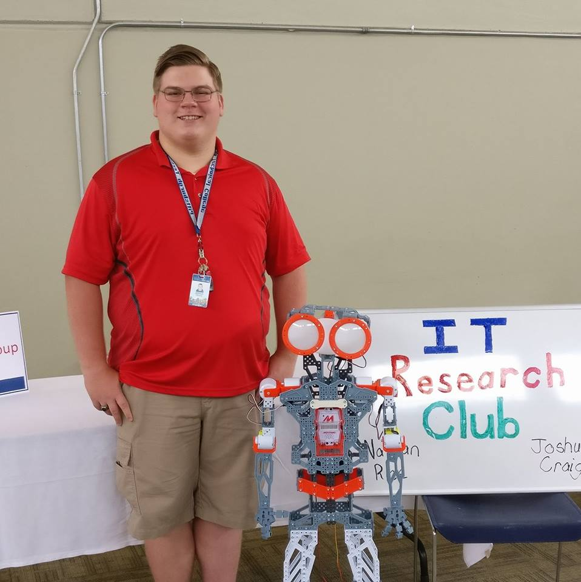

About Me
My name is Josh, I am 23 years old, and I live in West Virginia. Some hobbies include reading, cooking, watching anime, and quoting Star Wars to friends.
I graduated from John Marshall high school in 2016. In 2018 I graduated from Pittsburgh Technical College with an associate degree in information technology and a focus in network administration. I am currently attending Western Governors University for a Bachelor of Science in Information Technology.
I have worked at Orrick, Herrington, & Sutcliffe for over three years as an intern in the IT Project Management department.